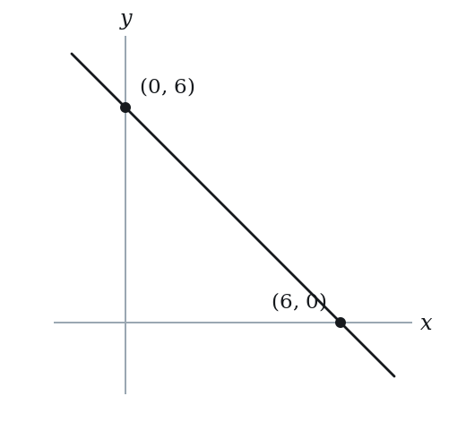
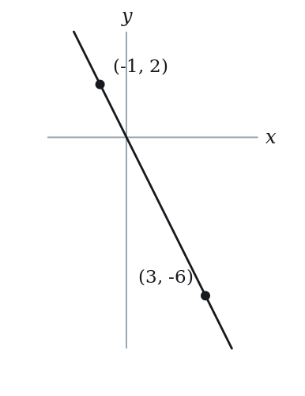

Equation of a Line — Practice Set
Bank code: COG-EQL · Section: Coordinate Geometry · 30 questions — Easy 8 · Medium 15 · Hard 7
A point and a slope fix a line, and so do two points; a horizontal line is y = c and a vertical line is x = c, which has no slope at all.
Every question below is live in the question bank under the ID shown — the sheet and the portal are the same questions. Attempt a level with the clock running, then check Part C.
Part A — Questions
Quantitative Comparison — the four choices are always the same, so they are not reprinted: (A) Quantity A is greater · (B) Quantity B is greater · (C) The two quantities are equal · (D) The relationship cannot be determined from the information given
Level 1 · Easy — 8 questions · ~7 min
warm-up — these must be automatic
Q1 · COG-EQL-003 · MCQ · 45s
Which of the following is the equation of a horizontal line passing through the point (4, -3)?
(A) x = 4
(B) x = -3
(C) y = 4
(D) y = -3
(E) y = x - 7
Q2 · COG-EQL-004 · MCQ · 45s
Which of the following is the equation of a vertical line passing through the point (5, 2)?
(A) y = 5
(B) y = 2
(C) x = 2
(D) x = 5
(E) y = 2x - 8
Q3 · COG-EQL-007 · MCQ · 50s
Which of the following points lies on the line in the xy-plane with equation y = 2x + 1?
(A) (3, 7)
(B) (7, 3)
(C) (3, 8)
(D) (4, 8)
(E) (1, 2)
Q4 · COG-EQL-013 · QC · 45s
Line P passes through (0, 4) and (2, 4).
Quantity A: The slope of line P Quantity B: 0
Q5 · COG-EQL-021 · Numeric Entry · 70s
Two lines intersect at a single point. Line 1: y = 3x - 4. Line 2: y = x + 2. What is the x-coordinate of the intersection point?
Numeric entry — write the number.
Q6 · COG-EQL-024 · MCQ · 65s
Which of the following equations represents a line that passes through the origin?
(A) y = 3x + 2
(B) 2x - y = 5
(C) y = -4x
(D) x + y = 1
(E) y = x - 1
Q7 · COG-EQL-KMF-005 · MCQ · 60s
Line L has slope 3/2, and its x-intercept is -4. Which of the following points lies on line L?
(A) (0, -6)
(B) (0, 4)
(C) (2, 7)
(D) (4, 12)
(E) (6, 3)
Q8 · COG-GLE-008 · MCQ · 55s
A line passes through (0, 6) and (6, 0). What is the equation of this line?

(A) y = x + 6
(B) y = -x + 6
(C) y = x - 6
(D) y = -x - 6
(E) y = 6x
Level 2 · Medium — 15 questions · ~21 min
two or three steps, one planted trap each
Q9 · COG-EQL-014 · MCQ · 65s
A line passes through the point (2, 5) and has slope 3. What is the equation of the line?
(A) y = 3x - 1
(B) y = 3x + 1
(C) y = 3x + 5
(D) y = 3x - 5
(E) y = 5x + 3
Q10 · COG-EQL-016 · MCQ · 75s
What is the equation of the line passing through the points (1, 3) and (4, 9)?

(A) y = 2x + 1
(B) y = 2x - 1
(C) y = 3x
(D) y = 2x + 3
(E) y = 6x - 3
Q11 · COG-EQL-019 · QC · 75s
Line L has equation y = (2/3)x - 5.
Quantity A: The y-intercept of line L Quantity B: The x-intercept of line L
Q12 · COG-EQL-020 · Select all that apply · 90s
In the xy-plane, line L passes through the point (0, 3) and has slope 2.
Which of the following points lie on line L?
Indicate all such points.
(A) (1, 5)
(B) (2, 7)
(C) (3, 9)
(D) (-1, 1)
(E) (-2, 0)
Q13 · COG-EQL-022 · QC · 60s
Line 1: y = 3x + 4. Line 2: y = 3x - 7.
Quantity A: The number of intersection points of Line 1 and Line 2 Quantity B: 1
Q14 · COG-EQL-025 · Numeric Entry · 80s
A line passes through (-1, 2) and (3, -6). What is the y-intercept of this line?

Numeric entry — write the number.
Q15 · COG-EQL-030 · Numeric Entry · 70s
Line 1: y = 2x + 1. Line 2: y = -x + 7. At what y-coordinate do these two lines intersect?
Numeric entry — write the number.
Q16 · COG-EQL-033 · Select all that apply · 90s
Which of the following are valid equations of lines passing through the point (2, 6)? Select all that apply.
(A) y = 3x
(B) y = 2x + 2
(C) y = x + 6
(D) 2x + y = 10
(E) y = 4x + 2
Q17 · COG-EQL-050 · MCQ · 120s
In the xy-plane, line L₁ has equation y = 3x - 2 and line L₂ has equation y = -2x + 8. A third line L₃ passes through the intersection of L₁ and L₂ and also passes through the origin. What is the equation of L₃?
(A) y = −2x
(B) y = (1/2)x
(C) y = (4/3)x
(D) y = 2x
(E) y = 3x
Q18 · COG-EQL-KMF-007 · Numeric Entry · 90s
The table lists three input-output pairs of a linear function g. Where does the graph of g meet the x-axis? Give the x-coordinate in fraction form.
| x | g(x) |
|---|---|
| 3 | 5/2 |
| 7 | -1/2 |
| 11 | -7/2 |
Numeric entry — write the number.
Q19 · COG-EQL-KMF-008 · MCQ · 75s
A line was translated 3 units to the left and 2 units down, and its new equation is y = 2x + 1. Which equation describes the original, unmoved line?
(A) y = 2x - 3
(B) y = 2x - 5
(C) y = 2x - 7
(D) y = 2x + 5
(E) y = 2x + 9
Q20 · COG-GLE-016 · QC · 80s
Line A has slope 3 and passes through (2, 8). Line B has slope 3 and passes through (5, 14).
Quantity A: The y-intercept of Line A Quantity B: The y-intercept of Line B
Q21 · COG-GLE-034 · Numeric Entry · 100s
A line has a slope of -2 and passes through the point (3, -1). The line crosses the x-axis at point P. What is the distance from the origin to point P?
Numeric entry — write the number.
Q22 · COG-GLE-KMF-008 · Select all that apply · 100s
In the xy-plane, line p has a negative slope and crosses the y-axis above the origin. Line q is horizontal and lies below the x-axis.
Which of the following statements must be true?
Indicate all such statements.
(A) Lines p and q intersect at exactly one point.
(B) The point where p and q intersect lies in Quadrant IV.
(C) Line p crosses the x-axis at a positive x-value.
(D) Line q crosses the y-axis above the origin.
(E) Line p passes through the origin.
F. Line q crosses the x-axis at exactly one point.
Q23 · SEC-CG-039 · QC · 90s
In the xy-plane, the point (k, k) lies on the graph of 0.4x + 0.1y = 15.
Quantity A: k Quantity B: 15
Level 3 · Hard — 7 questions · ~12 min
where 162+ is won or lost
Q24 · COG-EQL-036 · Numeric Entry · 95s
Three lines are defined as follows:
Line 1: y = 2x + 3
Line 2: y = -x + 9
Line 3: y = kx - 1
All three lines pass through a common point. What is the value of k?
Numeric entry — write the number.
Q25 · COG-EQL-037 · MCQ · 100s
The line passing through (p, 2p) and (2p, p), where p ≠ 0, has a y-intercept equal to which of the following?
(A) -3p
(B) -p
(C) 0
(D) p
(E) 3p
Q26 · COG-EQL-043 · Numeric Entry · 90s
If the lines y = ax + 5 and y = 2x + b intersect at the point (3, 11), what is the value of a + b?
Numeric entry — write the number.
Q27 · COG-EQL-045 · Select all that apply · 110s
Line L has a positive slope and a negative y-intercept. Which of the following must be true? Select all that apply.
(A) The x-intercept of line L is negative
(B) The x-intercept of line L is positive
(C) Line L passes through the second quadrant (x < 0, y > 0)
(D) Line L passes through the third quadrant (x < 0, y < 0)
(E) Line L passes through the fourth quadrant (x > 0, y < 0)
Q28 · COG-EQL-048 · MCQ · 120s
In the xy-plane, line L₁ passes through (a, 0) and (0, b) where a, b > 0. A second line L₂ is obtained by reflecting L₁ across the x-axis. If L₁ and L₂ intersect only on the x-axis, which of the following represents the equation of L₂?
(A) bx + ay = ab
(B) bx - ay = ab
(C) bx - ay = -ab
(D) ax + by = ab
(E) ax - by = ab
Q29 · COG-EQL-KMF-003 · Select all that apply · 135s
In the xy-plane, line n crosses the x-axis at the point (p, 0) and crosses the y-axis at the point (0, q), where p and q are positive numbers.
Which of the following point must lie on line n?
Indicate all such points.
(A) (p/4, 3q/4)
(B) (p, q)
(C) (-p, 2q)
(D) (2p, 2q)
(E) (3p, -2q)
F. (q, p)
Q30 · COG-GLE-038 · QC · 90s
In the xy-plane, line k passes through the points (0, 4) and (c, 0), where c > 0. Line m is perpendicular to line k and passes through the origin.
Quantity A: The slope of line m Quantity B: c/4
Part B — Answer Key
| Q | ID | Level | Type | Answer |
|---|---|---|---|---|
| 1 | COG-EQL-003 |
easy | MCQ | D |
| 2 | COG-EQL-004 |
easy | MCQ | D |
| 3 | COG-EQL-007 |
easy | MCQ | A |
| 4 | COG-EQL-013 |
easy | QC | C |
| 5 | COG-EQL-021 |
easy | Numeric Entry | 3 |
| 6 | COG-EQL-024 |
easy | MCQ | C |
| 7 | COG-EQL-KMF-005 |
easy | MCQ | D |
| 8 | COG-GLE-008 |
easy | MCQ | B |
| 9 | COG-EQL-014 |
medium | MCQ | A |
| 10 | COG-EQL-016 |
medium | MCQ | A |
| 11 | COG-EQL-019 |
medium | QC | B |
| 12 | COG-EQL-020 |
medium | Select all that apply | A, B, C, D |
| 13 | COG-EQL-022 |
medium | QC | B |
| 14 | COG-EQL-025 |
medium | Numeric Entry | 0 |
| 15 | COG-EQL-030 |
medium | Numeric Entry | 5 |
| 16 | COG-EQL-033 |
medium | Select all that apply | A, B, D |
| 17 | COG-EQL-050 |
medium | MCQ | D |
| 18 | COG-EQL-KMF-007 |
medium | Numeric Entry | 19/3 |
| 19 | COG-EQL-KMF-008 |
medium | MCQ | A |
| 20 | COG-GLE-016 |
medium | QC | A |
| 21 | COG-GLE-034 |
medium | Numeric Entry | 2.5 |
| 22 | COG-GLE-KMF-008 |
medium | Select all that apply | A, B, C |
| 23 | SEC-CG-039 |
medium | QC | A |
| 24 | COG-EQL-036 |
hard | Numeric Entry | 4 |
| 25 | COG-EQL-037 |
hard | MCQ | E |
| 26 | COG-EQL-043 |
hard | Numeric Entry | 7 |
| 27 | COG-EQL-045 |
hard | Select all that apply | B, D, E |
| 28 | COG-EQL-048 |
hard | MCQ | B |
| 29 | COG-EQL-KMF-003 |
hard | Select all that apply | A, C, E |
| 30 | COG-GLE-038 |
hard | QC | C |
Part C — Worked Solutions
Q1 · COG-EQL-003 — Answer: D
A horizontal line has a constant y-value for all x. Since the line passes through (4, -3), every point on the line has y = -3. The equation is y = -3. Note that x = 4 would be a vertical line.
Trap. Students write x = -3 (confusing x and y) or x = 4 (writing a vertical line instead of horizontal).
Q2 · COG-EQL-004 — Answer: D
A vertical line has a constant x-value for all y. Since the line passes through (5, 2), every point on the line has x = 5. The equation is x = 5. A vertical line has undefined slope and cannot be written in y = mx + b form.
Trap. Students write y = 5 (confusing the vertical line formula x = k with y = k) or choose x = 2 (using the y-coordinate instead of the x-coordinate).
Q3 · COG-EQL-007 — Answer: A
A point lies on the line if its coordinates satisfy y = 2x + 1. For (3, 7): 2(3) + 1 = 7, which equals y, so (3, 7) lies on the line. The others give 2(7)+1 = 15 ≠ 3, 2(3)+1 = 7 ≠ 8, 2(4)+1 = 9 ≠ 8, 2(1)+1 = 3 ≠ 2. Answer: A.
Trap. Choice B reverses the coordinates. Choice C uses y = 2x + 2. Choice D uses y = 2x. Choice E uses y = x + 1.
Q4 · COG-EQL-013 — Answer: C
Both points have y = 4, so line P is horizontal. The slope of a horizontal line is 0. Quantity A = 0 = Quantity B. They are equal.
Trap. Students compute (y2-y1)/(x2-x1) = 0/2 and incorrectly call 0/2 undefined (confusing with division of zero into zero or mixing up with vertical line slope), choosing D.
Q5 · COG-EQL-021 — Answer: 3
At the intersection, both equations are satisfied simultaneously. Set them equal: 3x - 4 = x + 2 → 2x = 6 → x = 3.
Trap. Students correctly find x = 3 but then substitute to find y = 5 and report 5 as the answer, confusing x-coordinate with y-coordinate.
Q6 · COG-EQL-024 — Answer: C
A line passes through the origin (0, 0) if substituting x = 0 and y = 0 satisfies the equation. A: 0 = 3(0)+2 = 2. False. B: 2(0)-0 = 0 ≠ 5. False. C: 0 = -4(0) = 0. True. D: 0+0 = 0 ≠ 1. False. E: 0 = 0-1 = -1. False. Only C passes through the origin.
Trap. Students recognize that y = mx (no constant) passes through the origin but then test options without substituting, missing that C is in the form y = mx with b = 0.
Q7 · COG-EQL-KMF-005 — Answer: D
The x-intercept is -4, so L passes through (-4, 0). With slope 3/2: y - 0 = (3/2)(x - (-4)), so y = (3/2)(x + 4). Test each point: (0, -6): y = (3/2)(4) = 6, not -6. No. (0, 4): y = 6, not 4. No. (2, 7): y = (3/2)(6) = 9, not 7. No. (4, 12): y = (3/2)(8) = 12. Yes. (6, 3): y = (3/2)(10) = 15, not 3. No. Check: slope from (-4, 0) to (4, 12) is 12/8 = 3/2.
Trap. Treating -4 as the y-intercept (y = 3x/2 + 4) makes (0, 4) look right, which is choice B; getting the sign wrong (y = (3/2)(x - 4)) makes (0, -6) and (6, 3) look right (choices A and E).
Q8 · COG-GLE-008 — Answer: B
The y-intercept is 6 (line passes through (0, 6)). The slope = (0 - 6) / (6 - 0) = -6/6 = -1. Equation: y = -1·x + 6 = -x + 6.
Trap. Students see the line connecting (0, 6) and (6, 0) and assign slope +1, thinking it 'rises' because 6 appears in both. The line actually falls as x increases — slope is -1.
Q9 · COG-EQL-014 — Answer: A
Using point-slope form with (x1, y1) = (2, 5) and m = 3: y - 5 = 3(x - 2) y - 5 = 3x - 6 y = 3x - 6 + 5 y = 3x - 1.
Trap. Students write y - 5 = 3(x - 2) but then expand incorrectly as y = 3x - 2 + 5 = 3x + 3, treating 3(x-2) as 3x - 2 instead of 3x - 6.
Q10 · COG-EQL-016 — Answer: A
Step 1 — Find slope: m = (9 - 3)/(4 - 1) = 6/3 = 2. Step 2 — Use point-slope with (1, 3): y - 3 = 2(x - 1) → y - 3 = 2x - 2 → y = 2x - 2 + 3 = 2x + 1.
Trap. Students invert the slope formula to (x2-x1)/(y2-y1) = 3/6 = 1/2, then build an equation with slope 1/2, reaching a wrong answer not in the options — confirming the inversion error.
Q11 · COG-EQL-019 — Answer: B
y-intercept (Quantity A): set x = 0 → y = -5. Quantity A = -5. x-intercept (Quantity B): set y = 0 → 0 = (2/3)x - 5 → (2/3)x = 5 → x = 15/2 = 7.5. Quantity B = 7.5. Since 7.5 > -5, Quantity B is greater.
Trap. Students correctly compute both intercepts but then compare absolute values (|-5| = 5 < 7.5) and mistakenly think that since -5 has a 'larger' absolute value in isolation they are confused — or they swap which is Quantity A and Quantity B.
Q12 · COG-EQL-020 — Answer: A, B, C, D
The equation of line L: y = 2x + 3 (slope 2, y-intercept 3). A. (1, 5): 2(1)+3 = 5 ✓ B. (2, 7): 2(2)+3 = 7 ✓ C. (3, 9): 2(3)+3 = 9 ✓ D. (-1, 1): 2(-1)+3 = -2+3 = 1 ✓ E. (-2, 0): 2(-2)+3 = -4+3 = -1 ≠ 0 ✗ A, B, C, D all lie on the line.
Trap. Students miscompute the negative-x cases: for D, they calculate 2(-1) = +2 (dropping the negative), getting 2+3 = 5 ≠ 1, and incorrectly exclude D. For E, the same error gives -4+3 = -1 ≠ 0, which is the correct computation — E really does not lie on the line.
Q13 · COG-EQL-022 — Answer: B
Both lines have slope 3 but different y-intercepts (4 vs -7). Parallel lines with equal slopes and different intercepts never intersect. Quantity A = 0. Quantity B = 1. Since 0 < 1, Quantity B is greater.
Trap. Students do not check whether the lines are parallel and assume any two distinct lines intersect exactly once, choosing C.
Q14 · COG-EQL-025 — Answer: 0
Step 1 — Slope: m = (-6 - 2)/(3 - (-1)) = -8/4 = -2. Step 2 — Use point-slope with (-1, 2): y - 2 = -2(x - (-1)) = -2(x + 1) → y - 2 = -2x - 2 → y = -2x - 2 + 2 = -2x. The y-intercept is 0. Verification: at x = 3: y = -2(3) = -6. ✓
Trap. Students write x - x1 = x - (-1) = x - 1 (dropping the double negative), giving y - 2 = -2(x - 1) → y = -2x + 2 + 2 = -2x + 4. They report y-intercept = 4.
Q15 · COG-EQL-030 — Answer: 5
Set equal to find x: 2x + 1 = -x + 7 → 3x = 6 → x = 2. Substitute back into Line 1: y = 2(2) + 1 = 5. The y-coordinate of intersection is 5.
Trap. Students find x = 2 and report 2 as the answer, not realizing the question asks for the y-coordinate, not the x-coordinate.
Q16 · COG-EQL-033 — Answer: A, B, D
Substitute (2, 6) in each equation. A: 3(2) = 6. Yes. B: 2(2) + 2 = 6. Yes. C: 2 + 6 = 8, not 6. No. D: 2(2) + 6 = 10. Yes. E: 4(2) + 2 = 10, not 6. No. The correct choices are A, B and D.
Trap. For C, students put the y-coordinate in as the intercept (y = x + 6) without checking. For E, a sign slip turns y = 4x − 2 into y = 4x + 2, which gives 10 at x = 2.
Q17 · COG-EQL-050 — Answer: D
Step 1 — Find the intersection of L₁ and L₂: set 3x - 2 = -2x + 8 → 5x = 10 → x = 2. Then y = 3(2) - 2 = 4. Intersection point: (2, 4). Step 2 — L₃ passes through (0, 0) and (2, 4). Slope = (4 - 0)/(2 - 0) = 4/2 = 2. Equation: y = 2x.
Trap. A uses the slope of L₂. B inverts the slope of the segment from the origin (x/y). C comes from the slip 3x + 2x = 8 − 2 = 6, giving the point (6/5, 8/5). E uses the slope of L₁. The intersection is (2, 4), so the correct slope is 2.
Q18 · COG-EQL-KMF-007 — Answer: 19/3
Slope between the first two rows: (-1/2 - 5/2)/(7 - 3) = (-3)/4 = -3/4. Check with the last two rows: (-7/2 - (-1/2))/(11 - 7) = (-3)/4 = -3/4, so the table is consistent with one line. Using the point (3, 5/2): g(x) = 5/2 - (3/4)(x - 3). Set g(x) = 0: (3/4)(x - 3) = 5/2, so x - 3 = (5/2)*(4/3) = 10/3, giving x = 3 + 10/3 = 19/3. Check: g(19/3) = 5/2 - (3/4)(10/3) = 5/2 - 5/2 = 0.
Trap. Estimating the zero by locating where the listed outputs change sign (between x = 3 and x = 7) and entering a value such as 5, instead of solving the line exactly.
Q19 · COG-EQL-KMF-008 — Answer: A
Undo the move: shift the new line 3 units right and 2 units up. Shifting right by 3 replaces x with (x - 3): y = 2(x - 3) + 1 = 2x - 5. Shifting up by 2 adds 2: y = 2x - 5 + 2 = 2x - 3. So the original line is y = 2x - 3. Check: move y = 2x - 3 left 3 and down 2: y = 2(x + 3) - 3 - 2 = 2x + 1, which is the given equation.
Trap. Applying the stated move again instead of reversing it, y = 2(x + 3) + 1 - 2 = 2x + 5 (choice D; or undoing only the horizontal move and stopping at 2x - 5 (choice B.
Q20 · COG-GLE-016 — Answer: A
Line A: slope = 3, through (2, 8). 8 = 3(2) + b → b = 2. Line B: slope = 3, through (5, 14). 14 = 3(5) + b → 14 = 15 + b → b = -1. Quantity A = 2, Quantity B = -1. Since 2 > -1, Quantity A is greater.
Trap. Students assume that two lines with the same slope must have the same y-intercept (since they are parallel). Two parallel lines have DIFFERENT y-intercepts — that is what makes them parallel rather than identical.
Q21 · COG-GLE-034 — Answer: 2.5
Line equation: y - (-1) = -2(x - 3) → y + 1 = -2x + 6 → y = -2x + 5. x-intercept (y = 0): 0 = -2x + 5 → x = 2.5. Point P = (2.5, 0). Distance from origin = √(2.5² + 0²) = 2.5.
Trap. Students find x = 2.5 correctly but then compute distance using the wrong second point — they use (3, -1) instead of the origin (0, 0): √((2.5-3)² + (0-(-1))²) = √(0.25 + 1) = √1.25 ≈ 1.12.
Q22 · COG-GLE-KMF-008 — Answer: A, B, C
Write p as y = mx + b with m < 0 and b > 0, and q as y = k with k < 0. A. True. A line with a nonzero slope meets any horizontal line exactly once. B. True. Solving mx + b = k gives x = (k - b)/m. Here k - b < 0 and m < 0, so x > 0, and the y-coordinate is k < 0. Positive x with negative y is Quadrant IV. C. True. Setting y = 0 gives x = -b/m; with b > 0 and m < 0 this is positive. D. False. Line q meets the y-axis at (0, k) and k < 0, so it is below the origin. E. False. Line p meets the y-axis at (0, b) with b > 0, so it misses the origin. F. False. A horizontal line y = k with k not equal to 0 never reaches the x-axis. Check with m = -1, b = 2, k = -3: the lines meet where -x + 2 = -3, at (5, -3), in Quadrant IV, and p crosses the x-axis at (2, 0).
Trap. Reading the negative height of q as 'a line that sits above the origin' or as having an x-intercept leads to marking choices D and F as true.
Q23 · SEC-CG-039 — Answer: A
Because the point has equal coordinates, substitute k for both x and y: 0.4k + 0.1k = 15. The left side collapses to 0.5k, so 0.5k = 15 and k = 30. Since 30 is greater than 15, Quantity A wins.
Trap. Students substitute into only one term, solving 0.4k = 15 to get 37.5 or 0.1k = 15 to get 150. A point on the line y = x makes both variables equal, so both coefficients act on the same k and must be added first.
Q24 · COG-EQL-036 — Answer: 4
Step 1 — Find intersection of Line 1 and Line 2: set 2x + 3 = -x + 9 → 3x = 6 → x = 2. Then y = 2(2) + 3 = 7. Common point: (2, 7). Step 2 — Line 3 must pass through (2, 7): 7 = k(2) - 1 → 8 = 2k → k = 4.
Trap. Students find the intersection (2, 7) but then solve 7 = 2k - 1 by computing k = 7 + 1 = 8 (failing to divide both sides by 2 after adding 1).
Q25 · COG-EQL-037 — Answer: E
Slope = (p - 2p)/(2p - p) = -1. Point-slope through (p, 2p): y - 2p = -(x - p), so y = -x + 3p. The y-intercept is 3p. Check with (2p, p): -2p + 3p = p.
Trap. Choosing D: writing y - 2p = -(x + p), a sign slip, which gives y = -x + p and intercept p. Choosing A flips the sign of the answer.
Q26 · COG-EQL-043 — Answer: 7
The intersection point (3, 11) lies on both lines. For Line 1 (y = ax + 5): 11 = a(3) + 5 → 3a = 6 → a = 2. For Line 2 (y = 2x + b): 11 = 2(3) + b → 11 = 6 + b → b = 5. a + b = 2 + 5 = 7.
Trap. Students correctly find a = 2 and b = 5 but then report one of these values (2 or 5) as the final answer rather than computing their sum.
Q27 · COG-EQL-045 — Answer: B, D, E
Line L: y = mx + b with m > 0 and b < 0. X-intercept = -b/m: since b < 0, -b > 0, and m > 0, so -b/m > 0. X-intercept is positive. B is true, A is false. Quadrant analysis: the y-intercept is (0, b) with b < 0 — below the x-axis. Moving right (x > 0), y increases (positive slope) until crossing the x-axis at x = -b/m > 0. For 0 < x < -b/m, y is negative: Quadrant IV (E is true). For x > -b/m, y is positive: Quadrant I. Moving left (x < 0), y decreases further below zero: Quadrant III (D is true). The line never has y > 0 when x < 0 (since the slope is positive, y gets more negative as x decreases from 0 — we'd need x to be quite positive to make y positive). So C (Quadrant II) is never entered.
Trap. Students assume positive slope means the line enters Quadrant II (like y = x), forgetting the negative y-intercept shifts everything down. With a negative y-intercept, the line rises from Quadrant III through IV, crosses the positive x-axis, and continues into Quadrant I, never touching Quadrant II.
Q28 · COG-EQL-048 — Answer: B
Line L₁ passes through (a, 0) and (0, b). Its equation in intercept form: x/a + y/b = 1 → bx + ay = ab. Reflecting L₁ across the x-axis replaces every point (x, y) with (x, -y). So every point (x, y) on L₁ maps to (x, -y) on L₂. The equation of L₂ is found by replacing y with -y in L₁'s equation: bx + a(-y) = ab → bx - ay = ab. Verification: L₁ and L₂ both pass through (a, 0) (the x-intercept), and that is their only intersection since their y-intercepts are (0, b) and (0, -b) respectively.
Trap. Students attempt to find L₂ by computing a new slope (which is -b/a instead of L₁'s slope -b/a... wait, the slope of L₁ = (b-0)/(0-a) = -b/a, and reflecting across the x-axis gives slope b/a). Students set up the equation with slope b/a through (a, 0): y = (b/a)(x-a), which gives bx - ay = ab — matching option B. The trap is that students confuse reflection across the x-axis with reflection across the y-axis.
Q29 · COG-EQL-KMF-003 — Answer: A, C, E
A line with x-intercept p and y-intercept q has the intercept equation x/p + y/q = 1. A point lies on the line exactly when its coordinates make that sum equal to 1. A. (p/4, 3q/4): (p/4)/p + (3q/4)/q = 1/4 + 3/4 = 1. ON THE LINE. B. (p, q): p/p + q/q = 1 + 1 = 2, not 1. NOT on the line. C. (-p, 2q): (-p)/p + (2q)/q = -1 + 2 = 1. ON THE LINE. D. (2p, 2q): 2 + 2 = 4, not 1. NOT on the line. E. (3p, -2q): 3 + (-2) = 1. ON THE LINE. F. (q, p): q/p + p/q, which equals 1 only for special values of p and q, not for every line. NOT on the line. Check with a concrete line, p = 4 and q = 6, so the line is x/4 + y/6 = 1, or 3x + 2y = 12. A gives (1, 4.5): 3(1) + 2(4.5) = 12. Correct. B gives (4, 6): 12 + 12 = 24. Not 12. C gives (-4, 12): -12 + 24 = 12. Correct. D gives (8, 12): 24 + 24 = 48. Not 12. E gives (12, -12): 36 - 24 = 12. Correct. F gives (6, 4): 18 + 8 = 26. Not 12. So the points that must lie on line n are A, C and E.
Trap. Pairing the two intercept values into the single point (p, q) and assuming it sits on the line; substituting gives 1 + 1 = 2 rather than 1, so selecting option B is wrong.
Q30 · COG-GLE-038 — Answer: C
Slope of line k = (0 - 4)/(c - 0) = -4/c. Perpendicular lines have slopes whose product is -1, so the slope of line m is the negative reciprocal of -4/c. Slope of line m = c/4. The two quantities are equal for every c > 0. Check with c = 2: line k has slope -2 and line m has slope 1/2 = 2/4. Answer: C.
Trap. Choosing D because c is unknown. Both quantities are the same expression in c, so they are equal whatever c is. A second error is taking the reciprocal without changing the sign, giving -c/4 and choice B.